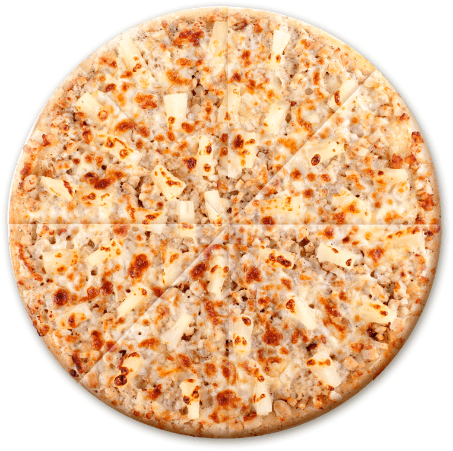

Oven · 15 minutes
15‑Minute Flatbread Italian Pizza
When yeast and dough proofing simply aren't an option, a crisp flatbread base delivers all the cheesy, bubbly satisfaction of a pizzeria in a fraction of the time.
Act I · The Setup
Store‑bought naan or sturdy flatbreads stand in for homemade dough. A hot oven and simple toppings keep this on a true 15‑minute clock.
Act II · Ingredients
- 2 store‑bought naan or sturdy flatbreads
- 1/2 cup pizza sauce or marinara
- 1 cup shredded mozzarella cheese
- Fresh basil leaves
- 1 tbsp olive oil
- Optional: pepperoni or quick‑cooking veggies
Act III · Steps
- Preheat your oven to 400°F (200°C). Place the flatbreads on a baking sheet.
- Spread a thin layer of pizza sauce over each flatbread, leaving a small border for the crust.
- Top generously with mozzarella and your chosen quick toppings.
- Bake for 8–10 minutes until the cheese is melted and bubbling. Garnish with fresh basil and a drizzle of olive oil.
Act IV · Tips & shortcuts
Brush the edges of the flatbread with olive oil before baking for an extra crispy crust. Keep pre‑shredded cheese and flatbreads in the freezer for true emergency pizza nights.